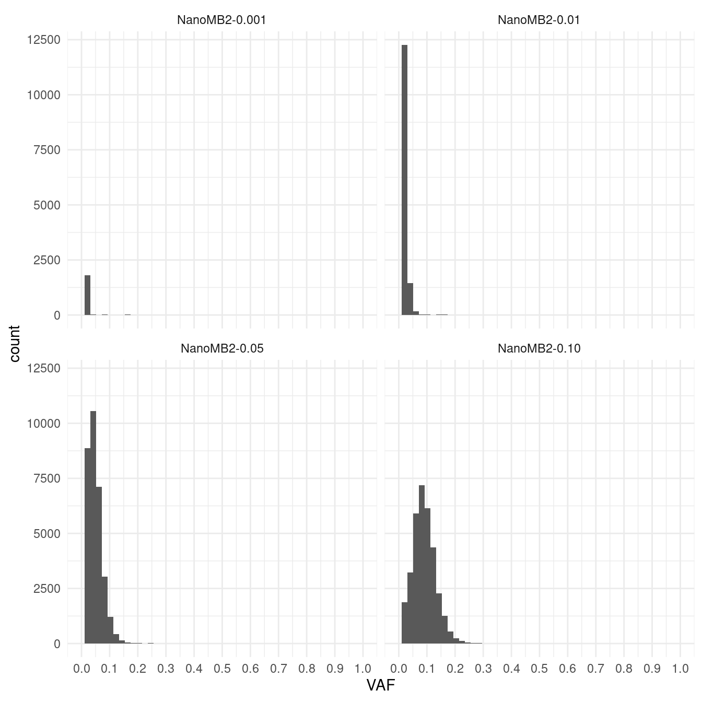

Last updated: 2022-05-20
Checks: 7 0
Knit directory: rare-mutation-detection/
This reproducible R Markdown analysis was created with workflowr (version 1.6.2). The Checks tab describes the reproducibility checks that were applied when the results were created. The Past versions tab lists the development history.
Great! Since the R Markdown file has been committed to the Git repository, you know the exact version of the code that produced these results.
Great job! The global environment was empty. Objects defined in the global environment can affect the analysis in your R Markdown file in unknown ways. For reproduciblity it’s best to always run the code in an empty environment.
The command set.seed(20210916) was run prior to running
the code in the R Markdown file. Setting a seed ensures that any results
that rely on randomness, e.g. subsampling or permutations, are
reproducible.
Great job! Recording the operating system, R version, and package versions is critical for reproducibility.
Nice! There were no cached chunks for this analysis, so you can be confident that you successfully produced the results during this run.
Great job! Using relative paths to the files within your workflowr project makes it easier to run your code on other machines.
Great! You are using Git for version control. Tracking code development and connecting the code version to the results is critical for reproducibility.
The results in this page were generated with repository version 727938e. See the Past versions tab to see a history of the changes made to the R Markdown and HTML files.
Note that you need to be careful to ensure that all relevant files for
the analysis have been committed to Git prior to generating the results
(you can use wflow_publish or
wflow_git_commit). workflowr only checks the R Markdown
file, but you know if there are other scripts or data files that it
depends on. Below is the status of the Git repository when the results
were generated:
Ignored files:
Ignored: .DS_Store
Ignored: .Rapp.history
Ignored: .Rhistory
Ignored: .Rproj.user/
Ignored: analysis/.DS_Store
Ignored: scripts/
Untracked files:
Untracked: ._.DS_Store
Untracked: DOCNAME
Untracked: analysis/._.DS_Store
Untracked: analysis/cache/
Untracked: analysis/calc_nanoseq_metrics.Rmd
Untracked: data/
Untracked: prototype_code/
Unstaged changes:
Modified: analysis/_site.yml
Modified: analysis/ecoli.Rmd
Note that any generated files, e.g. HTML, png, CSS, etc., are not included in this status report because it is ok for generated content to have uncommitted changes.
These are the previous versions of the repository in which changes were
made to the R Markdown (analysis/insilico_mixtures.Rmd) and
HTML (docs/insilico_mixtures.html) files. If you’ve
configured a remote Git repository (see ?wflow_git_remote),
click on the hyperlinks in the table below to view the files as they
were in that past version.
| File | Version | Author | Date | Message |
|---|---|---|---|---|
| Rmd | 727938e | Marek Cmero | 2022-05-20 | Added mixture results for 0.01 and 0.05 |
| html | 491e97d | Marek Cmero | 2022-05-19 | Build site. |
| Rmd | 434e8b9 | Marek Cmero | 2022-05-19 | Added in silico mixtures to navigation |
| html | ff1f665 | Marek Cmero | 2022-05-19 | Build site. |
| Rmd | 572a31d | Marek Cmero | 2022-05-19 | Added initial results from in silico mixture experiment |
In this experiment, the duplex reads from NanoSeq MB2 rep 1 from E coli K12 was mixed (in silico) at 10x depth with the duplex reads from NanoSeq MB2 (MGI) from E coli BL21 at 90x depth creating a 10% mixed genome. There are >33k SNP and INDEL differences between the E coli species, so we would expect to find approximately this many SNPs at the mixture frequency.
library(ggplot2)
library(data.table)
library(dplyr)
library(here)
library(tibble)
library(stringr)
library(Rsamtools)
library(GenomicRanges)
library(seqinr)
library(readxl)
library(patchwork)
library(RColorBrewer)
library(UpSetR)
library(vcfR)source(here('code/load_data.R'))
calculate_vafs <- function(var_df, freq_filter = 0.3) {
tmp <- var_df$Sample1 %>% str_split(':') %>% lapply(., function(x){as.numeric(x[5:6])})
var_df$RD <- lapply(tmp, head, 1) %>% unlist()
var_df$AD <- lapply(tmp, tail, 1) %>% unlist()
var_df$VAF <- var_df$AD / (var_df$AD + var_df$RD)
var_df <- var_df[var_df$VAF < freq_filter,]
return(var_df)
}variant_dir <- here('data/mixtures')var_df <- load_variants(variant_dir, c('NanoMB2-0.01', 'NanoMB2-0.05', 'ManoMB2-0.10')) %>% calculate_vafs()NanoSeq MB2 mixes:
data.table(var_df)[, list(VAF_mean = mean(VAF), nvars = length(POS)), by=sample] %>% print() sample VAF_mean nvars
1: NanoMB2-0.01 0.02880655 6141
2: NanoMB2-0.05 0.05095621 28579
3: ManoMB2-0.10 0.09227845 32283ggplot(var_df, aes(VAF)) +
geom_histogram(bins = 50) +
theme_minimal() +
facet_grid(~sample) +
scale_x_continuous(breaks = seq(0, 1, 0.1), limits = c(0, 1))
| Version | Author | Date |
|---|---|---|
| ff1f665 | Marek Cmero | 2022-05-19 |
sessionInfo()R version 4.0.5 (2021-03-31)
Platform: x86_64-pc-linux-gnu (64-bit)
Running under: CentOS Linux 7 (Core)
Matrix products: default
BLAS: /stornext/System/data/apps/R/R-4.0.5/lib64/R/lib/libRblas.so
LAPACK: /stornext/System/data/apps/R/R-4.0.5/lib64/R/lib/libRlapack.so
locale:
[1] LC_CTYPE=en_US.UTF-8 LC_NUMERIC=C
[3] LC_TIME=en_US.UTF-8 LC_COLLATE=en_US.UTF-8
[5] LC_MONETARY=en_US.UTF-8 LC_MESSAGES=en_US.UTF-8
[7] LC_PAPER=en_US.UTF-8 LC_NAME=C
[9] LC_ADDRESS=C LC_TELEPHONE=C
[11] LC_MEASUREMENT=en_US.UTF-8 LC_IDENTIFICATION=C
attached base packages:
[1] stats4 parallel stats graphics grDevices utils datasets
[8] methods base
other attached packages:
[1] vcfR_1.12.0 UpSetR_1.4.0 RColorBrewer_1.1-2
[4] patchwork_1.1.1 readxl_1.3.1 seqinr_4.2-8
[7] Rsamtools_2.6.0 Biostrings_2.58.0 XVector_0.30.0
[10] GenomicRanges_1.42.0 GenomeInfoDb_1.26.7 IRanges_2.24.1
[13] S4Vectors_0.28.1 BiocGenerics_0.36.1 stringr_1.4.0
[16] tibble_3.1.5 here_1.0.1 dplyr_1.0.7
[19] data.table_1.14.0 ggplot2_3.3.5 workflowr_1.6.2
loaded via a namespace (and not attached):
[1] sass_0.4.0 viridisLite_0.4.0 splines_4.0.5
[4] jsonlite_1.7.2 bslib_0.3.0 assertthat_0.2.1
[7] memuse_4.2-1 highr_0.9 GenomeInfoDbData_1.2.4
[10] cellranger_1.1.0 yaml_2.2.1 pillar_1.6.4
[13] lattice_0.20-44 glue_1.4.2 digest_0.6.27
[16] promises_1.2.0.1 colorspace_2.0-0 Matrix_1.3-2
[19] htmltools_0.5.2 httpuv_1.6.3 plyr_1.8.6
[22] pkgconfig_2.0.3 zlibbioc_1.36.0 purrr_0.3.4
[25] scales_1.1.1 whisker_0.4 later_1.3.0
[28] BiocParallel_1.24.1 git2r_0.28.0 mgcv_1.8-35
[31] farver_2.1.0 generics_0.1.1 ellipsis_0.3.2
[34] withr_2.4.2 magrittr_2.0.1 crayon_1.4.2
[37] evaluate_0.14 fs_1.5.0 fansi_0.5.0
[40] nlme_3.1-152 MASS_7.3-53.1 vegan_2.5-7
[43] tools_4.0.5 lifecycle_1.0.1 munsell_0.5.0
[46] cluster_2.1.2 ade4_1.7-18 compiler_4.0.5
[49] jquerylib_0.1.4 rlang_0.4.12 grid_4.0.5
[52] RCurl_1.98-1.3 labeling_0.4.2 bitops_1.0-7
[55] rmarkdown_2.11 gtable_0.3.0 DBI_1.1.1
[58] R6_2.5.1 gridExtra_2.3 knitr_1.33
[61] pinfsc50_1.2.0 fastmap_1.1.0 utf8_1.2.2
[64] rprojroot_2.0.2 permute_0.9-5 ape_5.5
[67] stringi_1.7.5 Rcpp_1.0.7 vctrs_0.3.8
[70] tidyselect_1.1.1 xfun_0.22